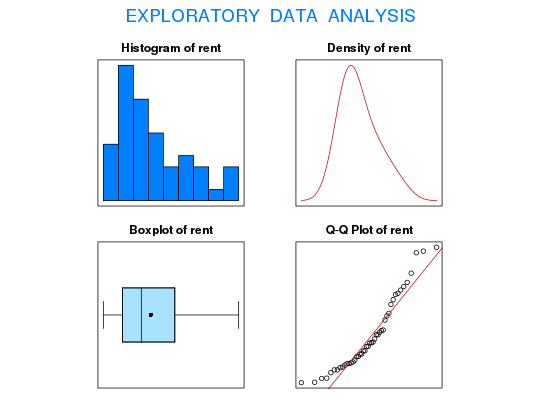

Data for Exercise 5.117
A data frame with 46 observations on the following variable.
Kitchens, L. J. (2003) Basic Statistics and Data Analysis. Duxbury
str(Metrent)#> 'data.frame': 46 obs. of 1 variable: #> $ rent: int 790 529 490 646 656 426 491 367 406 421 ... #>#> [1] "rent" #>#> Size (n) Missing Minimum 1st Qu Mean Median TrMean 3rd Qu #> 46.000 0.000 366.000 425.750 514.870 485.000 509.119 590.000 #> Max. Stdev. Var. SE Mean I.Q.R. Range Kurtosis Skewness #> 790.000 114.981 13220.560 16.953 164.250 424.000 -0.308 0.836 #> SW p-val #> 0.002 #>t.test(rent,conf.level=.99)$conf#> [1] 469.2731 560.4660 #> attr(,"conf.level") #> [1] 0.99 #>detach(Metrent)